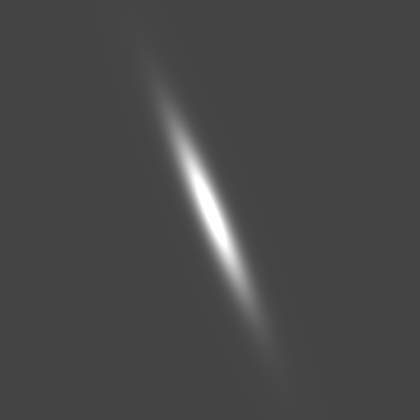
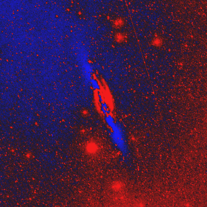

Disk and bulge are an exploratory two-component fit to radial medians, not a validated PSF-convolved GALFIT model. Bar is explicitly not fitted and is displayed as zero.
Bulge — provisionalDisk — provisionalBar — not fitted (zero)Bulge + disk + bar (bar=0)
Arm-light reconstruction
Original imageArms only

Smooth + fitted arms

Residual after subtracting model
Signed residuals
Before arms: original − sky − (bulge + disk)After arms: before − fitted arms
Red: positive residual. Blue: excess model. Both are signed differences in FITS pixel units, using the same residual display scale. Light fitting is in-sample and may overfit.
Method-by-method diagnostic summary
Method
Candidate curves
Pitch labels
In-sample SSE reduction
Track-V2
0
No reliable curve
0.0%
Curved Gabor
4
13.6°, 32.1°, 54.8°, 27.6°
5.0%
Fourier
2
60.0°, 60.0°
0.1%
Track-V2 and Fourier are carried forward from the earlier nearby-galaxy exploratory analysis. Curved Gabor ridge candidates and provisional brightness fits are newly calculated from the supplied FITS frames. No SpArcFiRe or full radial peak-graph rerun is claimed here.